theme_readme <- function() {
theme_minimal(base_size = 14) +
theme(
plot.title = element_text(face = "bold", size = 16),
plot.subtitle = element_text(color = "gray40"),
panel.grid.minor = element_blank(),
legend.position = "bottom"
)
}
colors <- c("total" = "#2C3E50", "white" = "#3498DB", "black" = "#E74C3C",
"hispanic" = "#F39C12", "asian" = "#9B59B6")
# Fetch data for visualizations
enr_2024 <- tryCatch(
fetch_enr(2024, use_cache = TRUE),
error = function(e) {
warning("Failed to fetch 2024 enrollment data: ", e$message)
NULL
}
)
stopifnot(!is.null(enr_2024))
enr <- tryCatch(
fetch_enr_multi(2020:2024, use_cache = TRUE),
error = function(e) {
warning("Failed to fetch multi-year enrollment data: ", e$message)
NULL
}
)
stopifnot(!is.null(enr))1. Jefferson County is Kentucky’s giant
Jefferson County Public Schools (Louisville) serves 103,000 students, about 15% of Kentucky’s entire enrollment. It’s larger than the next five districts combined.
s1 <- enr_2024 %>%
filter(is_district, grade_level == "TOTAL", subgroup == "total_enrollment") %>%
arrange(desc(n_students)) %>%
select(district_name, n_students) %>%
head(10)
stopifnot(nrow(s1) > 0)
s1
#> district_name n_students
#> 1 Jefferson County 103459
#> 2 Fayette County 44362
#> 3 Boone County 21583
#> 4 Warren County 20394
#> 5 Hardin County 16287
#> 6 Kenton County 14645
#> 7 Bullitt County 13674
#> 8 Oldham County 12546
#> 9 Daviess County 12011
#> 10 Madison County 12007
top_districts <- enr_2024 %>%
filter(is_district, grade_level == "TOTAL", subgroup == "total_enrollment") %>%
arrange(desc(n_students)) %>%
head(10) %>%
mutate(district_label = reorder(district_name, n_students))
stopifnot(nrow(top_districts) > 0)
print(top_districts %>% select(district_name, n_students))
#> district_name n_students
#> 1 Jefferson County 103459
#> 2 Fayette County 44362
#> 3 Boone County 21583
#> 4 Warren County 20394
#> 5 Hardin County 16287
#> 6 Kenton County 14645
#> 7 Bullitt County 13674
#> 8 Oldham County 12546
#> 9 Daviess County 12011
#> 10 Madison County 12007
ggplot(top_districts, aes(x = district_label, y = n_students)) +
geom_col(fill = colors["total"]) +
coord_flip() +
scale_y_continuous(labels = comma) +
labs(title = "Kentucky's Largest School Districts",
subtitle = "Jefferson County is nearly 15% of state enrollment",
x = "", y = "Students") +
theme_readme()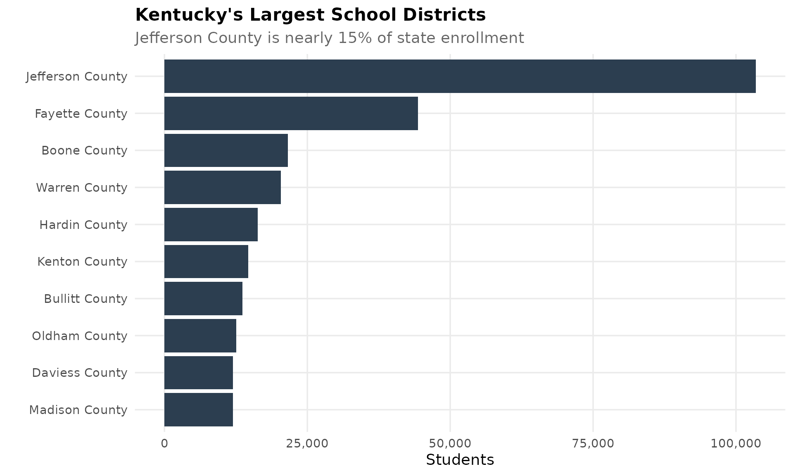
2. Kentucky enrollment has held steady near 686,000
Kentucky enrolled 698,000 students in 2020 and 686,000 in 2024 – a modest 1.7% decline over five years. Despite COVID disruptions, enrollment has been remarkably stable.
s2 <- enr %>%
filter(is_state, grade_level == "TOTAL", subgroup == "total_enrollment") %>%
select(end_year, n_students)
stopifnot(nrow(s2) > 0)
s2
#> end_year n_students
#> 1 2020 698388
#> 2 2021 682953
#> 3 2022 685401
#> 4 2023 687294
#> 5 2024 686224
state_trend <- enr %>%
filter(is_state, grade_level == "TOTAL", subgroup == "total_enrollment")
stopifnot(nrow(state_trend) > 0)
print(state_trend %>% select(end_year, n_students))
#> end_year n_students
#> 1 2020 698388
#> 2 2021 682953
#> 3 2022 685401
#> 4 2023 687294
#> 5 2024 686224
ggplot(state_trend, aes(x = end_year, y = n_students)) +
geom_line(linewidth = 1.5, color = colors["total"]) +
geom_point(size = 3, color = colors["total"]) +
geom_vline(xintercept = 2020.5, linetype = "dashed", color = "red", alpha = 0.5) +
annotate("text", x = 2020.7, y = max(state_trend$n_students), label = "COVID",
color = "red", alpha = 0.7, hjust = 0, size = 3.5) +
scale_y_continuous(labels = comma, limits = c(0, NA)) +
labs(title = "Kentucky Public School Enrollment",
subtitle = "Stable near 686,000 students since 2020",
x = "School Year", y = "Students") +
theme_readme()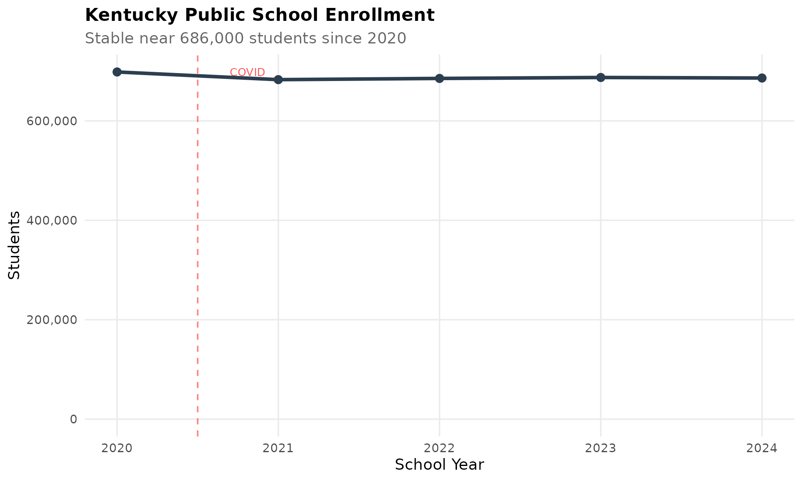
3. Eastern Kentucky coal counties are shrinking
Appalachian coal counties have seen significant enrollment declines. Pike, Floyd, Letcher, and Perry counties combined had over 22,000 students in 2020, dropping to about 20,200 by 2024.
appalachian <- c("Pike County", "Floyd County", "Letcher County", "Perry County")
s3 <- tryCatch(
fetch_enr_multi(2020:2024, use_cache = TRUE),
error = function(e) {
warning("Failed to fetch coal county data: ", e$message)
NULL
}
)
stopifnot(!is.null(s3))
s3 <- s3 %>%
filter(grepl(paste(appalachian, collapse = "|"), district_name, ignore.case = TRUE),
is_district, grade_level == "TOTAL", subgroup == "total_enrollment") %>%
select(end_year, district_name, n_students)
stopifnot(nrow(s3) > 0)
s3
#> end_year district_name n_students
#> 1 2020 Pike County 8770
#> 2 2020 Floyd County 6092
#> 3 2020 Perry County 4341
#> 4 2020 Letcher County 3119
#> 5 2021 Pike County 8457
#> 6 2021 Floyd County 5947
#> 7 2021 Perry County 4140
#> 8 2021 Letcher County 3091
#> 9 2022 Pike County 8245
#> 10 2022 Floyd County 5889
#> 11 2022 Perry County 3958
#> 12 2022 Letcher County 2990
#> 13 2023 Pike County 8197
#> 14 2023 Floyd County 5877
#> 15 2023 Perry County 3868
#> 16 2023 Letcher County 2706
#> 17 2024 Pike County 8044
#> 18 2024 Floyd County 5762
#> 19 2024 Perry County 3783
#> 20 2024 Letcher County 2611
appalachia <- enr %>%
filter(is_district, grepl(paste(appalachian, collapse = "|"), district_name, ignore.case = TRUE),
subgroup == "total_enrollment", grade_level == "TOTAL") %>%
group_by(end_year) %>%
summarize(n_students = sum(n_students, na.rm = TRUE), .groups = "drop")
stopifnot(nrow(appalachia) > 0)
print(appalachia)
#> # A tibble: 5 × 2
#> end_year n_students
#> <dbl> <dbl>
#> 1 2020 22322
#> 2 2021 21635
#> 3 2022 21082
#> 4 2023 20648
#> 5 2024 20200
ggplot(appalachia, aes(x = end_year, y = n_students)) +
geom_line(linewidth = 1.5, color = colors["total"]) +
geom_point(size = 3, color = colors["total"]) +
geom_vline(xintercept = 2020.5, linetype = "dashed", color = "red", alpha = 0.5) +
annotate("text", x = 2020.7, y = max(appalachia$n_students), label = "COVID",
color = "red", alpha = 0.7, hjust = 0, size = 3.5) +
scale_y_continuous(labels = comma) +
labs(title = "Eastern Kentucky Coal Counties",
subtitle = "Pike, Floyd, Letcher, and Perry counties combined",
x = "School Year", y = "Students") +
theme_readme()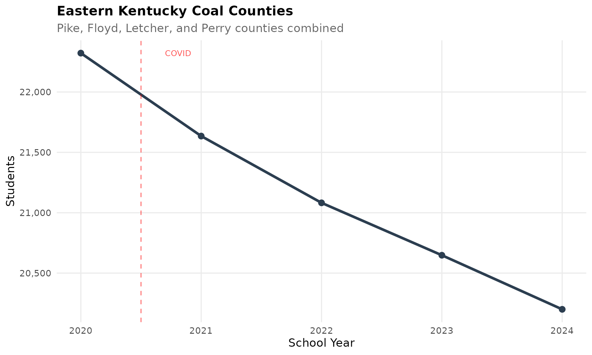
4. Hispanic students now 10% of enrollment
Hispanic students grew from 7.7% to over 10% of enrollment between 2020 and 2024. Lexington, Louisville, and central Kentucky drive this growth.
s4 <- enr %>%
filter(is_state, grade_level == "TOTAL", subgroup == "hispanic") %>%
select(end_year, n_students, pct)
stopifnot(nrow(s4) > 0)
s4
#> end_year n_students pct
#> 1 2020 53493 0.07659496
#> 2 2021 54658 0.08003186
#> 3 2022 58578 0.08546530
#> 4 2023 63502 0.09239423
#> 5 2024 69877 0.10182827
hispanic <- enr %>%
filter(is_state, grade_level == "TOTAL", subgroup == "hispanic")
stopifnot(nrow(hispanic) > 0)
print(hispanic %>% select(end_year, n_students, pct))
#> end_year n_students pct
#> 1 2020 53493 0.07659496
#> 2 2021 54658 0.08003186
#> 3 2022 58578 0.08546530
#> 4 2023 63502 0.09239423
#> 5 2024 69877 0.10182827
ggplot(hispanic, aes(x = end_year, y = pct * 100)) +
geom_line(linewidth = 1.5, color = colors["hispanic"]) +
geom_point(size = 3, color = colors["hispanic"]) +
geom_vline(xintercept = 2020.5, linetype = "dashed", color = "red", alpha = 0.5) +
annotate("text", x = 2020.7, y = max(hispanic$pct * 100), label = "COVID",
color = "red", alpha = 0.7, hjust = 0, size = 3.5) +
labs(title = "Hispanic Student Population in Kentucky",
subtitle = "From 7.7% to over 10% since 2020",
x = "School Year", y = "Percent of Students") +
theme_readme()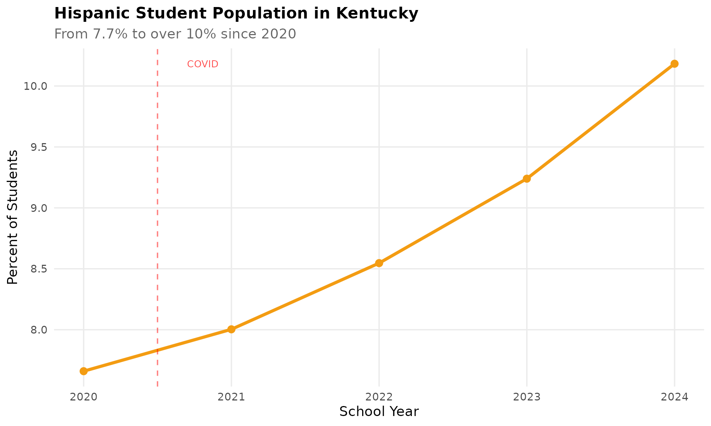
5. COVID dipped enrollment by 15,000 students
Kentucky lost over 15,000 students between 2020 and 2021. The state recovered modestly in 2022-2023 before a slight decline in 2024.
s5 <- enr %>%
filter(is_state, grade_level == "TOTAL", subgroup == "total_enrollment",
end_year %in% 2020:2024) %>%
select(end_year, n_students) %>%
mutate(change = n_students - lag(n_students))
stopifnot(nrow(s5) > 0)
s5
#> end_year n_students change
#> 1 2020 698388 NA
#> 2 2021 682953 -15435
#> 3 2022 685401 2448
#> 4 2023 687294 1893
#> 5 2024 686224 -1070
covid_years <- enr %>%
filter(is_state, grade_level == "TOTAL", subgroup == "total_enrollment")
stopifnot(nrow(covid_years) > 0)
print(covid_years %>% select(end_year, n_students))
#> end_year n_students
#> 1 2020 698388
#> 2 2021 682953
#> 3 2022 685401
#> 4 2023 687294
#> 5 2024 686224
ggplot(covid_years, aes(x = end_year, y = n_students)) +
geom_line(linewidth = 1.5, color = colors["total"]) +
geom_point(size = 3, color = colors["total"]) +
geom_vline(xintercept = 2020.5, linetype = "dashed", color = "red", alpha = 0.5) +
annotate("text", x = 2020.7, y = max(covid_years$n_students), label = "COVID",
color = "red", alpha = 0.7, hjust = 0, size = 3.5) +
scale_y_continuous(labels = comma) +
labs(title = "COVID's Impact on Kentucky Enrollment",
subtitle = "Lost over 15,000 students in 2021, then gradual recovery",
x = "School Year", y = "Students") +
theme_readme()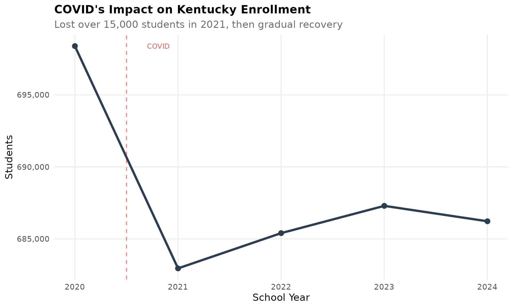
6. Fayette County holds steady alongside Louisville
While Jefferson County has remained relatively stable around 103,000, Fayette County (Lexington) has held at about 44,000 students. Both districts show resilience despite statewide pressures.
s6 <- enr %>%
filter(grepl("Fayette County|Jefferson County", district_name, ignore.case = TRUE),
is_district, grade_level == "TOTAL", subgroup == "total_enrollment") %>%
select(end_year, district_name, n_students) %>%
tidyr::pivot_wider(names_from = district_name, values_from = n_students)
stopifnot(nrow(s6) > 0)
s6
#> # A tibble: 5 × 3
#> end_year `Jefferson County` `Fayette County`
#> <dbl> <dbl> <dbl>
#> 1 2020 103876 44472
#> 2 2021 101678 43182
#> 3 2022 102204 43849
#> 4 2023 103432 43799
#> 5 2024 103459 44362
urban <- enr %>%
filter(grepl("Fayette County|Jefferson County", district_name, ignore.case = TRUE),
is_district, grade_level == "TOTAL", subgroup == "total_enrollment")
stopifnot(nrow(urban) > 0)
print(urban %>% select(end_year, district_name, n_students))
#> end_year district_name n_students
#> 1 2020 Jefferson County 103876
#> 2 2020 Fayette County 44472
#> 3 2021 Jefferson County 101678
#> 4 2021 Fayette County 43182
#> 5 2022 Jefferson County 102204
#> 6 2022 Fayette County 43849
#> 7 2023 Jefferson County 103432
#> 8 2023 Fayette County 43799
#> 9 2024 Jefferson County 103459
#> 10 2024 Fayette County 44362
ggplot(urban, aes(x = end_year, y = n_students, color = district_name)) +
geom_line(linewidth = 1.2) +
geom_point(size = 2.5) +
geom_vline(xintercept = 2020.5, linetype = "dashed", color = "red", alpha = 0.5) +
annotate("text", x = 2020.7, y = max(urban$n_students), label = "COVID",
color = "red", alpha = 0.7, hjust = 0, size = 3.5) +
scale_y_continuous(labels = comma) +
labs(title = "Kentucky's Two Urban Giants",
subtitle = "Both districts relatively stable since 2020",
x = "School Year", y = "Students", color = "") +
theme_readme()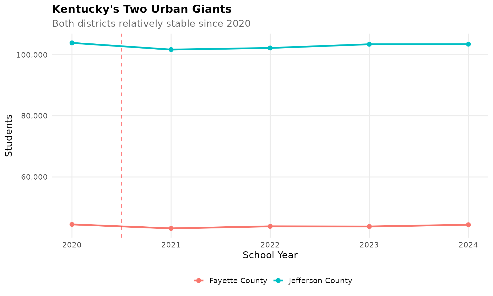
7. 62% of students are economically disadvantaged
Kentucky has one of the highest rates of economic disadvantage in the nation. In some eastern Kentucky districts, over 90% of students qualify.
s7a <- enr_2024 %>%
filter(is_state, grade_level == "TOTAL", subgroup == "econ_disadv") %>%
select(n_students, pct)
stopifnot(nrow(s7a) > 0)
s7a
#> n_students pct
#> 1 426203 0.6210844
# Highest rates
s7b <- enr_2024 %>%
filter(is_district, grade_level == "TOTAL", subgroup == "econ_disadv") %>%
arrange(desc(pct)) %>%
select(district_name, n_students, pct) %>%
head(10)
stopifnot(nrow(s7b) > 0)
s7b
#> district_name n_students pct
#> 1 Fulton Independent 318 0.9325513
#> 2 Covington Independent 3693 0.9089343
#> 3 Newport Independent 1595 0.9083144
#> 4 Dayton Independent 820 0.8807734
#> 5 Fairview Independent 507 0.8711340
#> 6 Lee County 831 0.8629283
#> 7 Harlan County 3156 0.8590093
#> 8 McCreary County 2491 0.8551322
#> 9 Bell County 2202 0.8334595
#> 10 Pineville Independent 532 0.8325509
econ_top <- enr_2024 %>%
filter(is_district, grade_level == "TOTAL", subgroup == "econ_disadv") %>%
arrange(desc(pct)) %>%
head(10) %>%
mutate(district_label = reorder(district_name, pct))
stopifnot(nrow(econ_top) > 0)
print(econ_top %>% select(district_name, pct))
#> district_name pct
#> 1 Fulton Independent 0.9325513
#> 2 Covington Independent 0.9089343
#> 3 Newport Independent 0.9083144
#> 4 Dayton Independent 0.8807734
#> 5 Fairview Independent 0.8711340
#> 6 Lee County 0.8629283
#> 7 Harlan County 0.8590093
#> 8 McCreary County 0.8551322
#> 9 Bell County 0.8334595
#> 10 Pineville Independent 0.8325509
ggplot(econ_top, aes(x = district_label, y = pct * 100)) +
geom_col(fill = colors["black"]) +
coord_flip() +
labs(title = "Highest Rates of Economic Disadvantage",
subtitle = "Eastern Kentucky districts often exceed 90%",
x = "", y = "Percent Economically Disadvantaged") +
theme_readme()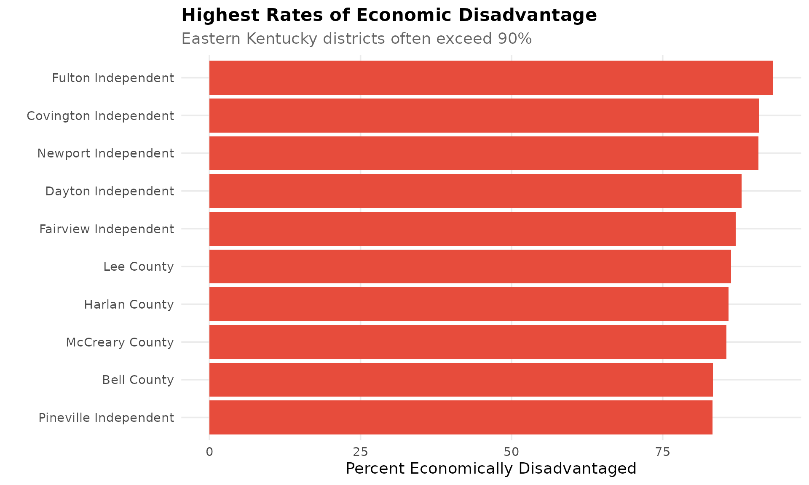
8. Kentucky is 71% white
Kentucky remains one of the less diverse states. Louisville and Lexington have significant minority populations; most rural districts are 90%+ white.
s8 <- enr_2024 %>%
filter(is_state, grade_level == "TOTAL",
subgroup %in% c("white", "black", "hispanic", "asian")) %>%
select(subgroup, n_students, pct) %>%
arrange(desc(pct))
stopifnot(nrow(s8) > 0)
s8
#> subgroup n_students pct
#> 1 white 488062 0.71122840
#> 2 black 74804 0.10900814
#> 3 hispanic 69877 0.10182827
#> 4 asian 14529 0.02117239
demo <- enr_2024 %>%
filter(is_state, grade_level == "TOTAL",
subgroup %in% c("white", "black", "hispanic", "asian", "multiracial")) %>%
arrange(desc(pct)) %>%
mutate(subgroup_label = reorder(subgroup, pct))
stopifnot(nrow(demo) > 0)
print(demo %>% select(subgroup, n_students, pct))
#> subgroup n_students pct
#> 1 white 488062 0.71122840
#> 2 black 74804 0.10900814
#> 3 hispanic 69877 0.10182827
#> 4 multiracial 36681 0.05345339
#> 5 asian 14529 0.02117239
ggplot(demo, aes(x = subgroup_label, y = pct * 100)) +
geom_col(aes(fill = subgroup)) +
coord_flip() +
scale_fill_manual(values = c("white" = colors["white"], "black" = colors["black"],
"hispanic" = colors["hispanic"], "asian" = colors["asian"],
"multiracial" = "#1ABC9C")) +
labs(title = "Kentucky Student Demographics",
subtitle = "State is 71% white",
x = "", y = "Percent of Students") +
theme_readme() +
theme(legend.position = "none")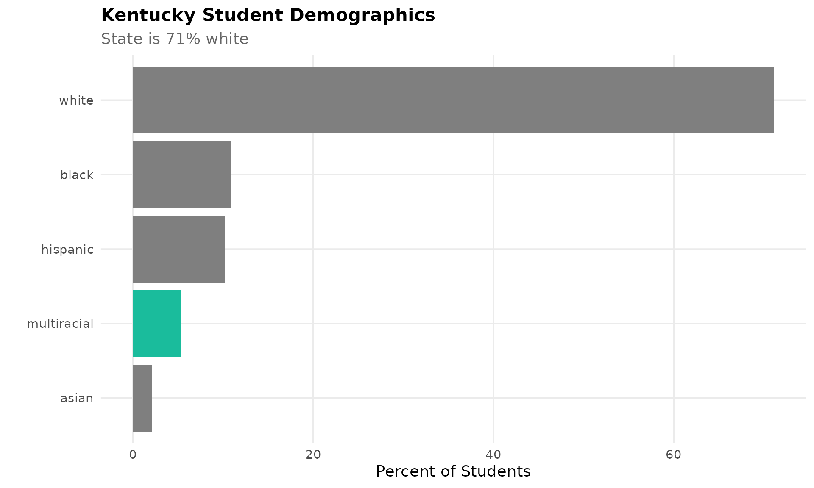
9. Boone County is Northern Kentucky’s growth story
Boone County in the Cincinnati suburbs has about 21,500 students. It’s now the third-largest district in Kentucky.
s9 <- enr %>%
filter(grepl("Boone County", district_name, ignore.case = TRUE),
is_district, grade_level == "TOTAL", subgroup == "total_enrollment") %>%
select(end_year, n_students)
stopifnot(nrow(s9) > 0)
s9
#> end_year n_students
#> 1 2020 21935
#> 2 2021 21483
#> 3 2022 21432
#> 4 2023 21384
#> 5 2024 21583
boone <- enr %>%
filter(is_district, grepl("Boone County", district_name, ignore.case = TRUE),
subgroup == "total_enrollment", grade_level == "TOTAL")
stopifnot(nrow(boone) > 0)
print(boone %>% select(end_year, n_students))
#> end_year n_students
#> 1 2020 21935
#> 2 2021 21483
#> 3 2022 21432
#> 4 2023 21384
#> 5 2024 21583
ggplot(boone, aes(x = end_year, y = n_students)) +
geom_line(linewidth = 1.5, color = colors["total"]) +
geom_point(size = 3, color = colors["total"]) +
geom_vline(xintercept = 2020.5, linetype = "dashed", color = "red", alpha = 0.5) +
annotate("text", x = 2020.7, y = max(boone$n_students), label = "COVID",
color = "red", alpha = 0.7, hjust = 0, size = 3.5) +
scale_y_continuous(labels = comma) +
labs(title = "Boone County - Northern Kentucky Growth",
subtitle = "Cincinnati suburbs with stable enrollment",
x = "School Year", y = "Students") +
theme_readme()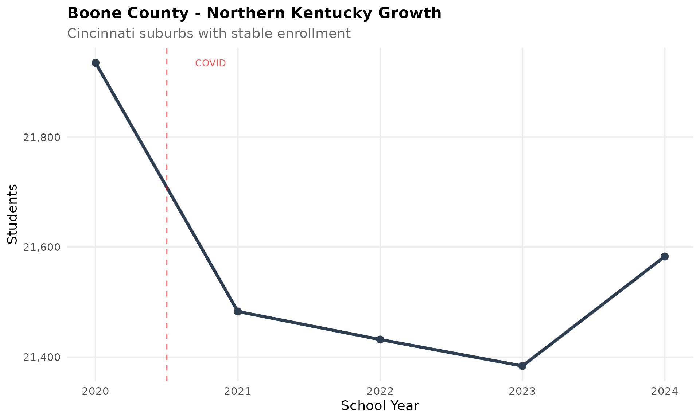
10. Independent districts are a Kentucky tradition
Kentucky has both county-wide districts (like Jefferson County) and independent city districts (like Bowling Green Independent). Some independent districts serve just a few hundred students.
s10 <- enr_2024 %>%
filter(grepl("Independent", district_name, ignore.case = TRUE),
is_district, grade_level == "TOTAL", subgroup == "total_enrollment") %>%
arrange(n_students) %>%
select(district_name, n_students) %>%
head(10)
stopifnot(nrow(s10) > 0)
s10
#> district_name n_students
#> 1 Southgate Independent 221
#> 2 Augusta Independent 337
#> 3 Fulton Independent 341
#> 4 Jackson Independent 384
#> 5 Anchorage Independent 413
#> 6 Jenkins Independent 533
#> 7 Science Hill Independent 538
#> 8 East Bernstadt Independent 545
#> 9 Burgin Independent 546
#> 10 Fairview Independent 582
independent <- enr_2024 %>%
filter(grepl("Independent", district_name, ignore.case = TRUE),
is_district, grade_level == "TOTAL", subgroup == "total_enrollment") %>%
arrange(n_students) %>%
head(15) %>%
mutate(district_label = reorder(district_name, n_students))
stopifnot(nrow(independent) > 0)
print(independent %>% select(district_name, n_students))
#> district_name n_students
#> 1 Southgate Independent 221
#> 2 Augusta Independent 337
#> 3 Fulton Independent 341
#> 4 Jackson Independent 384
#> 5 Anchorage Independent 413
#> 6 Jenkins Independent 533
#> 7 Science Hill Independent 538
#> 8 East Bernstadt Independent 545
#> 9 Burgin Independent 546
#> 10 Fairview Independent 582
#> 11 Bellevue Independent 626
#> 12 Dawson Springs Independent 632
#> 13 Pineville Independent 639
#> 14 Caverna Independent 752
#> 15 Barbourville Independent 810
ggplot(independent, aes(x = district_label, y = n_students)) +
geom_col(fill = colors["total"]) +
coord_flip() +
scale_y_continuous(labels = comma) +
labs(title = "Kentucky's Smallest Independent Districts",
subtitle = "Some serve just a few hundred students with their own school boards",
x = "", y = "Students") +
theme_readme()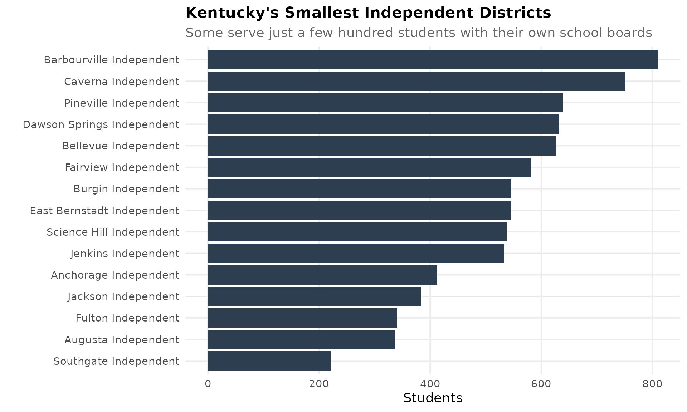
11. Louisville is Kentucky’s diversity hub
Jefferson County has significant Black (36%), Hispanic (18%), and Asian (5%) populations. White students make up only 35% of enrollment in Louisville.
s11 <- enr_2024 %>%
filter(grepl("Jefferson County", district_name, ignore.case = TRUE),
is_district, grade_level == "TOTAL",
subgroup %in% c("white", "black", "hispanic", "asian")) %>%
select(subgroup, n_students, pct)
stopifnot(nrow(s11) > 0)
s11
#> subgroup n_students pct
#> 1 white 35817 0.34619511
#> 2 black 37106 0.35865415
#> 3 hispanic 18993 0.18357997
#> 4 asian 5103 0.04932389
# Louisville vs rest of state demographic comparison
jefferson <- enr_2024 %>%
filter(grepl("Jefferson County", district_name, ignore.case = TRUE),
is_district, grade_level == "TOTAL",
subgroup %in% c("white", "black", "hispanic", "asian", "multiracial")) %>%
mutate(area = "Jefferson County (Louisville)")
state <- enr_2024 %>%
filter(is_state, grade_level == "TOTAL",
subgroup %in% c("white", "black", "hispanic", "asian", "multiracial")) %>%
mutate(area = "Kentucky Statewide")
compare <- bind_rows(jefferson, state) %>%
mutate(subgroup = factor(subgroup, levels = c("white", "black", "hispanic", "asian", "multiracial")))
stopifnot(nrow(compare) > 0)
print(compare %>% select(area, subgroup, pct))
#> area subgroup pct
#> 1 Jefferson County (Louisville) white 0.34619511
#> 2 Jefferson County (Louisville) black 0.35865415
#> 3 Jefferson County (Louisville) hispanic 0.18357997
#> 4 Jefferson County (Louisville) asian 0.04932389
#> 5 Jefferson County (Louisville) multiracial 0.05937618
#> 6 Kentucky Statewide white 0.71122840
#> 7 Kentucky Statewide black 0.10900814
#> 8 Kentucky Statewide hispanic 0.10182827
#> 9 Kentucky Statewide asian 0.02117239
#> 10 Kentucky Statewide multiracial 0.05345339
ggplot(compare, aes(x = subgroup, y = pct * 100, fill = area)) +
geom_col(position = "dodge") +
scale_fill_manual(values = c("Jefferson County (Louisville)" = colors["black"],
"Kentucky Statewide" = colors["white"])) +
labs(title = "Louisville vs Kentucky Demographics",
subtitle = "Jefferson County is Kentucky's diversity hub",
x = "", y = "Percent of Students", fill = "") +
theme_readme()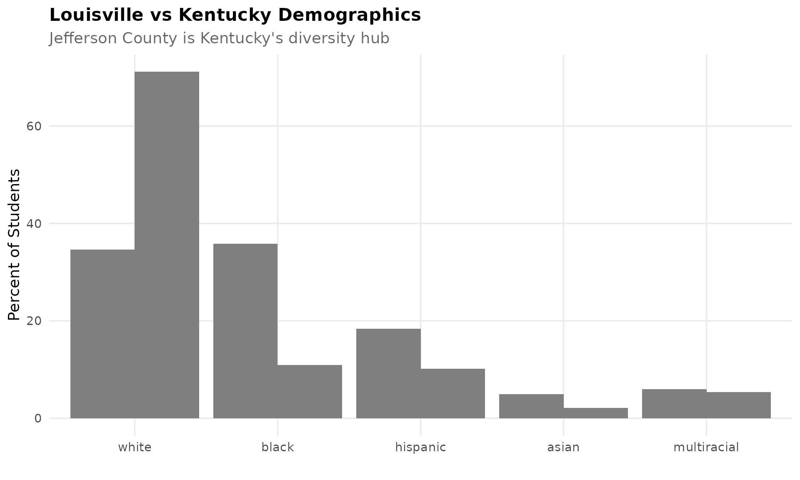
12. The gender gap is minimal
Kentucky schools have nearly equal male and female enrollment, with males at 51.7% and females at 48.3%.
s12 <- enr_2024 %>%
filter(is_state, grade_level == "TOTAL",
subgroup %in% c("male", "female")) %>%
select(subgroup, n_students, pct)
stopifnot(nrow(s12) > 0)
s12
#> subgroup n_students pct
#> 1 male 354795 0.5170251
#> 2 female 331429 0.4829749
gender <- enr_2024 %>%
filter(is_state, grade_level == "TOTAL",
subgroup %in% c("male", "female")) %>%
mutate(subgroup = factor(subgroup, levels = c("male", "female")))
stopifnot(nrow(gender) > 0)
print(gender %>% select(subgroup, n_students, pct))
#> subgroup n_students pct
#> 1 male 354795 0.5170251
#> 2 female 331429 0.4829749
ggplot(gender, aes(x = subgroup, y = n_students, fill = subgroup)) +
geom_col() +
geom_text(aes(label = paste0(round(pct * 100, 1), "%")), vjust = -0.5, size = 5) +
scale_y_continuous(labels = comma, expand = expansion(mult = c(0, 0.1))) +
scale_fill_manual(values = c("male" = colors["white"], "female" = colors["hispanic"])) +
labs(title = "Gender Balance in Kentucky Schools",
subtitle = "Near-equal enrollment with slight male majority",
x = "", y = "Students") +
theme_readme() +
theme(legend.position = "none")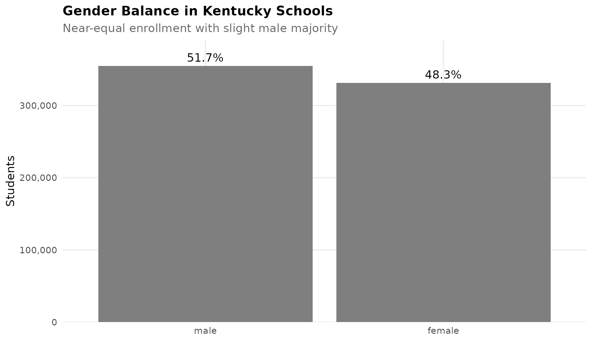
13. Oldham County is the wealthy suburb
Oldham County, between Louisville and Lexington, has about 12,500 students. It has Kentucky’s lowest economic disadvantage rate.
s13 <- enr %>%
filter(grepl("Oldham County", district_name, ignore.case = TRUE),
is_district, grade_level == "TOTAL", subgroup == "total_enrollment") %>%
select(end_year, n_students)
stopifnot(nrow(s13) > 0)
s13
#> end_year n_students
#> 1 2020 13171
#> 2 2021 12910
#> 3 2022 12875
#> 4 2023 12792
#> 5 2024 12546
oldham <- enr %>%
filter(is_district, grepl("Oldham County", district_name, ignore.case = TRUE),
subgroup == "total_enrollment", grade_level == "TOTAL")
stopifnot(nrow(oldham) > 0)
print(oldham %>% select(end_year, n_students))
#> end_year n_students
#> 1 2020 13171
#> 2 2021 12910
#> 3 2022 12875
#> 4 2023 12792
#> 5 2024 12546
ggplot(oldham, aes(x = end_year, y = n_students)) +
geom_line(linewidth = 1.5, color = colors["asian"]) +
geom_point(size = 3, color = colors["asian"]) +
geom_vline(xintercept = 2020.5, linetype = "dashed", color = "red", alpha = 0.5) +
annotate("text", x = 2020.7, y = max(oldham$n_students), label = "COVID",
color = "red", alpha = 0.7, hjust = 0, size = 3.5) +
scale_y_continuous(labels = comma) +
labs(title = "Oldham County - The Wealthy Suburb",
subtitle = "Stable enrollment between Louisville and Lexington",
x = "School Year", y = "Students") +
theme_readme()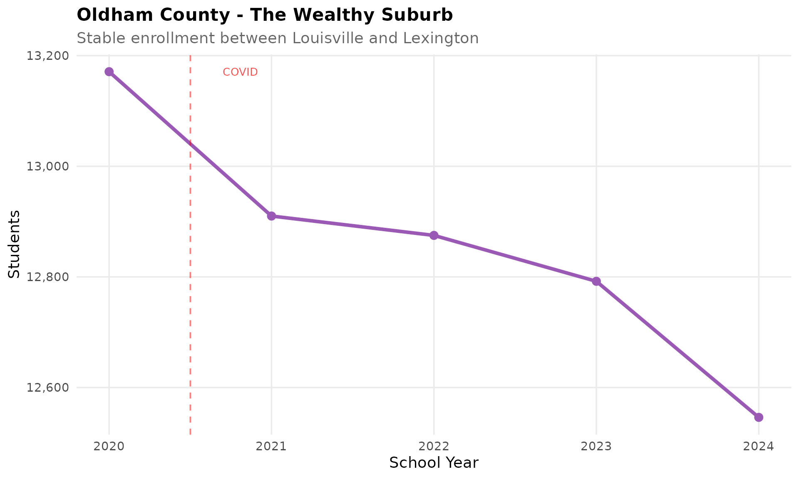
14. Harlan County tells the coal story
Harlan County dropped from 4,096 students in 2020 to 3,674 in 2024, a 10% decline in just five years. The county symbolizes the contraction of coal country in eastern Kentucky.
s14 <- tryCatch(
fetch_enr_multi(2020:2024, use_cache = TRUE),
error = function(e) {
warning("Failed to fetch Harlan County data: ", e$message)
NULL
}
)
stopifnot(!is.null(s14))
s14 <- s14 %>%
filter(grepl("Harlan County", district_name, ignore.case = TRUE),
is_district, grade_level == "TOTAL", subgroup == "total_enrollment") %>%
select(end_year, n_students)
stopifnot(nrow(s14) > 0)
s14
#> end_year n_students
#> 1 2020 4096
#> 2 2021 3957
#> 3 2022 3827
#> 4 2023 3764
#> 5 2024 3674
harlan <- enr %>%
filter(is_district, grepl("Harlan County", district_name, ignore.case = TRUE),
subgroup == "total_enrollment", grade_level == "TOTAL")
stopifnot(nrow(harlan) > 0)
print(harlan %>% select(end_year, n_students))
#> end_year n_students
#> 1 2020 4096
#> 2 2021 3957
#> 3 2022 3827
#> 4 2023 3764
#> 5 2024 3674
ggplot(harlan, aes(x = end_year, y = n_students)) +
geom_line(linewidth = 1.5, color = colors["black"]) +
geom_point(size = 3, color = colors["black"]) +
geom_vline(xintercept = 2020.5, linetype = "dashed", color = "red", alpha = 0.5) +
annotate("text", x = 2020.7, y = max(harlan$n_students), label = "COVID",
color = "red", alpha = 0.7, hjust = 0, size = 3.5) +
scale_y_continuous(labels = comma) +
labs(title = "Harlan County - The Coal Story",
subtitle = "10% enrollment decline in five years",
x = "School Year", y = "Students") +
theme_readme()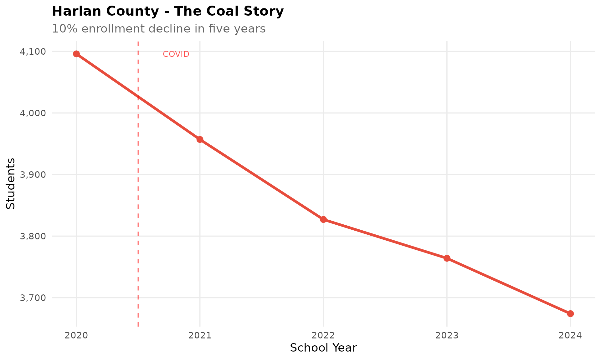
15. The multiracial population is growing
Multiracial students now make up 5.3% of Kentucky’s enrollment, up from 4.4% in 2020.
s15 <- enr %>%
filter(is_state, grade_level == "TOTAL", subgroup == "multiracial") %>%
select(end_year, n_students, pct)
stopifnot(nrow(s15) > 0)
s15
#> end_year n_students pct
#> 1 2020 30414 0.04354886
#> 2 2021 31949 0.04678067
#> 3 2022 33664 0.04911577
#> 4 2023 35350 0.05143359
#> 5 2024 36681 0.05345339
multiracial <- enr %>%
filter(is_state, grade_level == "TOTAL", subgroup == "multiracial")
stopifnot(nrow(multiracial) > 0)
print(multiracial %>% select(end_year, n_students, pct))
#> end_year n_students pct
#> 1 2020 30414 0.04354886
#> 2 2021 31949 0.04678067
#> 3 2022 33664 0.04911577
#> 4 2023 35350 0.05143359
#> 5 2024 36681 0.05345339
ggplot(multiracial, aes(x = end_year, y = n_students)) +
geom_line(linewidth = 1.5, color = "#1ABC9C") +
geom_point(size = 3, color = "#1ABC9C") +
geom_vline(xintercept = 2020.5, linetype = "dashed", color = "red", alpha = 0.5) +
annotate("text", x = 2020.7, y = max(multiracial$n_students), label = "COVID",
color = "red", alpha = 0.7, hjust = 0, size = 3.5) +
scale_y_continuous(labels = comma) +
labs(title = "Multiracial Students in Kentucky",
subtitle = "5.3% of enrollment, up from 4.4% in 2020",
x = "School Year", y = "Students") +
theme_readme()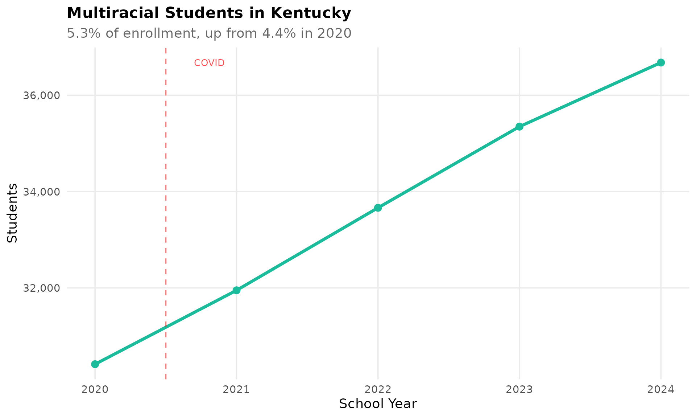
sessionInfo()
#> R version 4.5.2 (2025-10-31)
#> Platform: x86_64-pc-linux-gnu
#> Running under: Ubuntu 24.04.3 LTS
#>
#> Matrix products: default
#> BLAS: /usr/lib/x86_64-linux-gnu/openblas-pthread/libblas.so.3
#> LAPACK: /usr/lib/x86_64-linux-gnu/openblas-pthread/libopenblasp-r0.3.26.so; LAPACK version 3.12.0
#>
#> locale:
#> [1] LC_CTYPE=C.UTF-8 LC_NUMERIC=C LC_TIME=C.UTF-8
#> [4] LC_COLLATE=C.UTF-8 LC_MONETARY=C.UTF-8 LC_MESSAGES=C.UTF-8
#> [7] LC_PAPER=C.UTF-8 LC_NAME=C LC_ADDRESS=C
#> [10] LC_TELEPHONE=C LC_MEASUREMENT=C.UTF-8 LC_IDENTIFICATION=C
#>
#> time zone: UTC
#> tzcode source: system (glibc)
#>
#> attached base packages:
#> [1] stats graphics grDevices utils datasets methods base
#>
#> other attached packages:
#> [1] scales_1.4.0 dplyr_1.2.0 ggplot2_4.0.2 kyschooldata_0.1.0
#>
#> loaded via a namespace (and not attached):
#> [1] bit_4.6.0 gtable_0.3.6 jsonlite_2.0.0 crayon_1.5.3
#> [5] compiler_4.5.2 tidyselect_1.2.1 parallel_4.5.2 tidyr_1.3.2
#> [9] jquerylib_0.1.4 systemfonts_1.3.1 textshaping_1.0.4 yaml_2.3.12
#> [13] fastmap_1.2.0 readr_2.2.0 R6_2.6.1 labeling_0.4.3
#> [17] generics_0.1.4 curl_7.0.0 knitr_1.51 tibble_3.3.1
#> [21] desc_1.4.3 tzdb_0.5.0 bslib_0.10.0 pillar_1.11.1
#> [25] RColorBrewer_1.1-3 rlang_1.1.7 cachem_1.1.0 xfun_0.56
#> [29] fs_1.6.6 sass_0.4.10 S7_0.2.1 bit64_4.6.0-1
#> [33] cli_3.6.5 pkgdown_2.2.0 withr_3.0.2 magrittr_2.0.4
#> [37] digest_0.6.39 grid_4.5.2 vroom_1.7.0 hms_1.1.4
#> [41] rappdirs_0.3.4 lifecycle_1.0.5 vctrs_0.7.1 evaluate_1.0.5
#> [45] glue_1.8.0 farver_2.1.2 codetools_0.2-20 ragg_1.5.0
#> [49] purrr_1.2.1 rmarkdown_2.30 httr_1.4.8 tools_4.5.2
#> [53] pkgconfig_2.0.3 htmltools_0.5.9